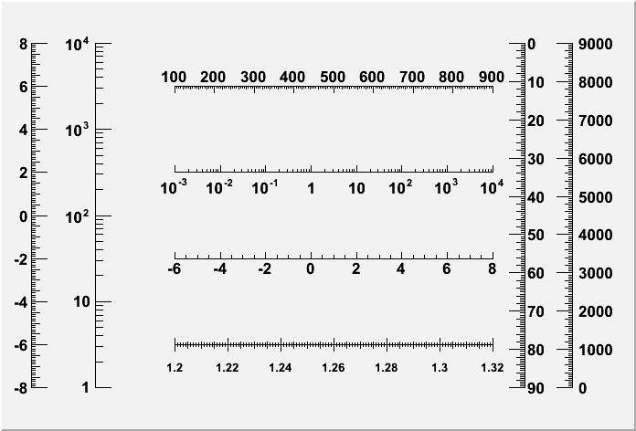
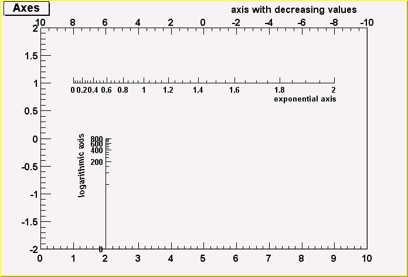

class TGaxis: public TLine, public TAttText
TGaxis : to draw axis
The example below generates various kind of axis.
{kind=link}

{
TCanvas *c1 = new TCanvas("c1","Examples of Gaxis",10,10,700,500);
c1->Range(-10,-1,10,1);
TGaxis *axis1 = new TGaxis(-4.5,-0.2,5.5,-0.2,-6,8,510,"");
axis1->SetName("axis1");
axis1->Draw();
TGaxis *axis2 = new TGaxis(-4.5,0.2,5.5,0.2,0.001,10000,510,"G");
axis2->SetName("axis2");
axis2->Draw();
TGaxis *axis3 = new TGaxis(-9,-0.8,-9,0.8,-8,8,50510,"");
axis3->SetName("axis3");
axis3->Draw();
TGaxis *axis4 = new TGaxis(-7,-0.8,-7,0.8,1,10000,50510,"G");
axis4->SetName("axis4");
axis4->Draw();
TGaxis *axis5 = new TGaxis(-4.5,-0.6,5.5,-0.6,1.2,1.32,80506,"-+");
axis5->SetName("axis5");
axis5->SetLabelSize(0.03);
axis5->SetTextFont(72);
axis5->SetLabelOffset(0.025);
axis5->Draw();
TGaxis *axis6 = new TGaxis(-4.5,0.6,5.5,0.6,100,900,50510,"-");
axis6->SetName("axis6");
axis6->Draw();
TGaxis *axis7 = new TGaxis(8,-0.8,8,0.8,0,9000,50510,"+L");
axis7->SetName("axis7");
axis7->SetLabelOffset(0.01);
axis7->Draw();
//one can make axis going top->bottom. However because of a long standing
//problem, the two x values should not be equal
TGaxis *axis8 = new TGaxis(6.5,0.8,6.499,-0.8,0,90,50510,"-");
axis8->SetName("axis8");
axis8->Draw();
return c1;
}See the second TGaxis constructor for examples of TGaxis with a mapping function.
Function Members (Methods)
public:
| TGaxis() | |
| TGaxis(Double_t xmin, Double_t ymin, Double_t xmax, Double_t ymax, const char* funcname, Int_t ndiv = 510, Option_t* chopt = "", Double_t gridlength = 0) | |
| TGaxis(Double_t xmin, Double_t ymin, Double_t xmax, Double_t ymax, Double_t wmin, Double_t wmax, Int_t ndiv = 510, Option_t* chopt = "", Double_t gridlength = 0) | |
| virtual | ~TGaxis() |
| void | TObject::AbstractMethod(const char* method) const |
| virtual void | AdjustBinSize(Double_t A1, Double_t A2, Int_t nold, Double_t& BinLow, Double_t& BinHigh, Int_t& nbins, Double_t& BinWidth) |
| virtual void | TObject::AppendPad(Option_t* option = "") |
| virtual void | TObject::Browse(TBrowser* b) |
| virtual void | CenterLabels(Bool_t center = kTRUE) |
| virtual void | CenterTitle(Bool_t center = kTRUE) |
| static TClass* | Class() |
| virtual const char* | TObject::ClassName() const |
| virtual void | TObject::Clear(Option_t* = "") |
| virtual TObject* | TObject::Clone(const char* newname = "") const |
| virtual Int_t | TObject::Compare(const TObject* obj) const |
| virtual void | TLine::Copy(TObject& line) const |
| virtual void | TObject::Delete(Option_t* option = "")MENU |
| Int_t | TAttLine::DistancetoLine(Int_t px, Int_t py, Double_t xp1, Double_t yp1, Double_t xp2, Double_t yp2) |
| virtual Int_t | TLine::DistancetoPrimitive(Int_t px, Int_t py) |
| virtual void | TObject::Draw(Option_t* option = "") |
| virtual void | DrawAxis(Double_t xmin, Double_t ymin, Double_t xmax, Double_t ymax, Double_t wmin, Double_t wmax, Int_t ndiv = 510, Option_t* chopt = "", Double_t gridlength = 0) |
| virtual void | TObject::DrawClass() constMENU |
| virtual TObject* | TObject::DrawClone(Option_t* option = "") constMENU |
| virtual TLine* | TLine::DrawLine(Double_t x1, Double_t y1, Double_t x2, Double_t y2) |
| virtual TLine* | TLine::DrawLineNDC(Double_t x1, Double_t y1, Double_t x2, Double_t y2) |
| virtual void | TObject::Dump() constMENU |
| virtual void | TObject::Error(const char* method, const char* msgfmt) const |
| virtual void | TObject::Execute(const char* method, const char* params, Int_t* error = 0) |
| virtual void | TObject::Execute(TMethod* method, TObjArray* params, Int_t* error = 0) |
| virtual void | TLine::ExecuteEvent(Int_t event, Int_t px, Int_t py) |
| virtual void | TObject::Fatal(const char* method, const char* msgfmt) const |
| virtual TObject* | TObject::FindObject(const char* name) const |
| virtual TObject* | TObject::FindObject(const TObject* obj) const |
| virtual Option_t* | TObject::GetDrawOption() const |
| static Long_t | TObject::GetDtorOnly() |
| TF1* | GetFunction() const |
| Float_t | GetGridLength() const |
| virtual const char* | TObject::GetIconName() const |
| Int_t | GetLabelColor() const |
| Int_t | GetLabelFont() const |
| Float_t | GetLabelOffset() const |
| Float_t | GetLabelSize() const |
| virtual Color_t | TAttLine::GetLineColor() const |
| virtual Style_t | TAttLine::GetLineStyle() const |
| virtual Width_t | TAttLine::GetLineWidth() const |
| static Int_t | GetMaxDigits() |
| virtual const char* | GetName() const |
| Int_t | GetNdiv() const |
| virtual char* | TObject::GetObjectInfo(Int_t px, Int_t py) const |
| static Bool_t | TObject::GetObjectStat() |
| virtual const char* | GetOption() const |
| virtual Short_t | TAttText::GetTextAlign() const |
| virtual Float_t | TAttText::GetTextAngle() const |
| virtual Color_t | TAttText::GetTextColor() const |
| virtual Font_t | TAttText::GetTextFont() const |
| virtual Float_t | TAttText::GetTextSize() const |
| Float_t | GetTickSize() const |
| virtual const char* | GetTitle() const |
| Float_t | GetTitleOffset() const |
| Float_t | GetTitleSize() const |
| virtual UInt_t | TObject::GetUniqueID() const |
| Double_t | GetWmax() const |
| Double_t | GetWmin() const |
| Double_t | TLine::GetX1() const |
| Double_t | TLine::GetX2() const |
| Double_t | TLine::GetY1() const |
| Double_t | TLine::GetY2() const |
| virtual Bool_t | TObject::HandleTimer(TTimer* timer) |
| virtual ULong_t | TObject::Hash() const |
| virtual void | ImportAxisAttributes(TAxis* axis) |
| virtual void | TObject::Info(const char* method, const char* msgfmt) const |
| virtual Bool_t | TObject::InheritsFrom(const char* classname) const |
| virtual Bool_t | TObject::InheritsFrom(const TClass* cl) const |
| virtual void | TObject::Inspect() constMENU |
| void | TObject::InvertBit(UInt_t f) |
| virtual TClass* | IsA() const |
| virtual Bool_t | TObject::IsEqual(const TObject* obj) const |
| virtual Bool_t | TObject::IsFolder() const |
| Bool_t | TLine::IsHorizontal() |
| Bool_t | TObject::IsOnHeap() const |
| virtual Bool_t | TObject::IsSortable() const |
| Bool_t | TLine::IsVertical() |
| Bool_t | TObject::IsZombie() const |
| void | LabelsLimits(const char* label, Int_t& first, Int_t& last) |
| virtual void | TLine::ls(Option_t* option = "") const |
| void | TObject::MayNotUse(const char* method) const |
| virtual void | TAttLine::Modify() |
| virtual Bool_t | TObject::Notify() |
| void | TObject::Obsolete(const char* method, const char* asOfVers, const char* removedFromVers) const |
| static void | TObject::operator delete(void* ptr) |
| static void | TObject::operator delete(void* ptr, void* vp) |
| static void | TObject::operator delete[](void* ptr) |
| static void | TObject::operator delete[](void* ptr, void* vp) |
| void* | TObject::operator new(size_t sz) |
| void* | TObject::operator new(size_t sz, void* vp) |
| void* | TObject::operator new[](size_t sz) |
| void* | TObject::operator new[](size_t sz, void* vp) |
| virtual void | Paint(Option_t* chopt = "") |
| virtual void | PaintAxis(Double_t xmin, Double_t ymin, Double_t xmax, Double_t ymax, Double_t& wmin, Double_t& wmax, Int_t& ndiv, Option_t* chopt = "", Double_t gridlength = 0, Bool_t drawGridOnly = kFALSE) |
| virtual void | TLine::PaintLine(Double_t x1, Double_t y1, Double_t x2, Double_t y2) |
| virtual void | TLine::PaintLineNDC(Double_t u1, Double_t v1, Double_t u2, Double_t v2) |
| virtual void | TObject::Pop() |
| virtual void | TLine::Print(Option_t* option = "") const |
| virtual Int_t | TObject::Read(const char* name) |
| virtual void | TObject::RecursiveRemove(TObject* obj) |
| virtual void | TAttLine::ResetAttLine(Option_t* option = "") |
| virtual void | TAttText::ResetAttText(Option_t* toption = "") |
| void | TObject::ResetBit(UInt_t f) |
| virtual void | Rotate(Double_t X, Double_t Y, Double_t CFI, Double_t SFI, Double_t XT, Double_t YT, Double_t& U, Double_t& V) |
| virtual void | TObject::SaveAs(const char* filename = "", Option_t* option = "") constMENU |
| virtual void | TAttLine::SaveLineAttributes(ostream& out, const char* name, Int_t coldef = 1, Int_t stydef = 1, Int_t widdef = 1) |
| virtual void | SavePrimitive(ostream& out, Option_t* option = "") |
| virtual void | TAttText::SaveTextAttributes(ostream& out, const char* name, Int_t alidef = 12, Float_t angdef = 0, Int_t coldef = 1, Int_t fondef = 61, Float_t sizdef = 1) |
| void | TObject::SetBit(UInt_t f) |
| void | TObject::SetBit(UInt_t f, Bool_t set) |
| virtual void | SetDecimals(Bool_t dot = kTRUE)MENU |
| virtual void | TObject::SetDrawOption(Option_t* option = "")MENU |
| static void | TObject::SetDtorOnly(void* obj) |
| void | SetFunction(const char* funcname = "") |
| void | SetGridLength(Float_t gridlength) |
| void | TLine::SetHorizontal(Bool_t set = kTRUE)TOGGLE GETTER |
| void | SetLabelColor(Int_t labelcolor)MENU |
| void | SetLabelFont(Int_t labelfont)MENU |
| void | SetLabelOffset(Float_t labeloffset)MENU |
| void | SetLabelSize(Float_t labelsize)MENU |
| virtual void | TAttLine::SetLineAttributes()MENU |
| virtual void | TAttLine::SetLineColor(Color_t lcolor) |
| virtual void | TAttLine::SetLineStyle(Style_t lstyle) |
| virtual void | TAttLine::SetLineWidth(Width_t lwidth) |
| static void | SetMaxDigits(Int_t maxd = 5) |
| virtual void | SetMoreLogLabels(Bool_t more = kTRUE)MENU |
| virtual void | SetName(const char* name)MENU |
| virtual void | SetNdivisions(Int_t ndiv)MENU |
| virtual void | SetNoExponent(Bool_t noExponent = kTRUE)MENU |
| static void | TObject::SetObjectStat(Bool_t stat) |
| void | SetOption(Option_t* option = "") |
| virtual void | TAttText::SetTextAlign(Short_t align = 11) |
| virtual void | TAttText::SetTextAngle(Float_t tangle = 0)MENU |
| virtual void | TAttText::SetTextAttributes()MENU |
| virtual void | TAttText::SetTextColor(Color_t tcolor = 1) |
| virtual void | TAttText::SetTextFont(Font_t tfont = 62) |
| virtual void | TAttText::SetTextSize(Float_t tsize = 1) |
| virtual void | TAttText::SetTextSizePixels(Int_t npixels) |
| void | SetTickSize(Float_t ticksize)MENU |
| void | SetTimeFormat(const char* tformat) |
| void | SetTimeOffset(Double_t toffset, Option_t* option = "local") |
| virtual void | SetTitle(const char* title = "")MENU |
| void | SetTitleColor(Int_t titlecolor)MENU |
| void | SetTitleFont(Int_t titlefont)MENU |
| void | SetTitleOffset(Float_t titleoffset = 1)MENU |
| void | SetTitleSize(Float_t titlesize)MENU |
| virtual void | TObject::SetUniqueID(UInt_t uid) |
| void | TLine::SetVertical(Bool_t set = kTRUE)TOGGLE GETTER |
| void | SetWmax(Double_t wmax) |
| void | SetWmin(Double_t wmin) |
| virtual void | TLine::SetX1(Double_t x1) |
| virtual void | TLine::SetX2(Double_t x2) |
| virtual void | TLine::SetY1(Double_t y1) |
| virtual void | TLine::SetY2(Double_t y2) |
| virtual void | ShowMembers(TMemberInspector& insp) |
| virtual void | Streamer(TBuffer& b) |
| void | StreamerNVirtual(TBuffer& b) |
| virtual void | TObject::SysError(const char* method, const char* msgfmt) const |
| Bool_t | TObject::TestBit(UInt_t f) const |
| Int_t | TObject::TestBits(UInt_t f) const |
| virtual void | TObject::UseCurrentStyle() |
| virtual void | TObject::Warning(const char* method, const char* msgfmt) const |
| virtual Int_t | TObject::Write(const char* name = 0, Int_t option = 0, Int_t bufsize = 0) |
| virtual Int_t | TObject::Write(const char* name = 0, Int_t option = 0, Int_t bufsize = 0) const |
protected:
| TGaxis(const TGaxis&) | |
| virtual void | TObject::DoError(int level, const char* location, const char* fmt, va_list va) const |
| void | TObject::MakeZombie() |
| TGaxis& | operator=(const TGaxis&) |
Data Members
public:
| enum TLine::[unnamed] { | kLineNDC | |
| kVertical | ||
| kHorizontal | ||
| }; | ||
| enum TObject::EStatusBits { | kCanDelete | |
| kMustCleanup | ||
| kObjInCanvas | ||
| kIsReferenced | ||
| kHasUUID | ||
| kCannotPick | ||
| kNoContextMenu | ||
| kInvalidObject | ||
| }; | ||
| enum TObject::[unnamed] { | kIsOnHeap | |
| kNotDeleted | ||
| kZombie | ||
| kBitMask | ||
| kSingleKey | ||
| kOverwrite | ||
| kWriteDelete | ||
| }; |
protected:
| TAxis* | fAxis | !pointer to original TAxis axis (if any) |
| TString | fChopt | Axis options |
| TF1* | fFunction | !Pointer to function computing axis values |
| TString | fFunctionName | name of mapping function pointed by fFunction |
| Float_t | fGridLength | Length of the grid in NDC |
| Int_t | fLabelColor | Color for labels |
| Int_t | fLabelFont | Font for labels |
| Float_t | fLabelOffset | Offset of label wrt axis |
| Float_t | fLabelSize | Size of labels in NDC |
| Color_t | TAttLine::fLineColor | line color |
| Style_t | TAttLine::fLineStyle | line style |
| Width_t | TAttLine::fLineWidth | line width |
| TString | fName | axis name |
| Int_t | fNdiv | Number of divisions |
| Short_t | TAttText::fTextAlign | Text alignment |
| Float_t | TAttText::fTextAngle | Text angle |
| Color_t | TAttText::fTextColor | Text color index |
| Font_t | TAttText::fTextFont | Text font number |
| Float_t | TAttText::fTextSize | Text size |
| Float_t | fTickSize | Size of primary tick mark in NDC |
| TString | fTimeFormat | Time format, ex: 09/12/99 12:34:00 |
| TString | fTitle | axis title |
| Float_t | fTitleOffset | Offset of title wrt axis |
| Float_t | fTitleSize | Size of title in NDC |
| Double_t | fWmax | Highest value on the axis |
| Double_t | fWmin | Lowest value on the axis |
| Double_t | TLine::fX1 | X of 1st point |
| Double_t | TLine::fX2 | X of 2nd point |
| Double_t | TLine::fY1 | Y of 1st point |
| Double_t | TLine::fY2 | Y of 2nd point |
| static Int_t | fgMaxDigits | !Number of digits above which the 10>N notation is used |
Class Charts
{kind=link}
{kind=link}
{kind=link}
{kind=link}
Function documentation
TGaxis(Double_t xmin, Double_t ymin, Double_t xmax, Double_t ymax, Double_t wmin, Double_t wmax, Int_t ndiv = 510, Option_t* chopt = "", Double_t gridlength = 0)
TGaxis(Double_t xmin, Double_t ymin, Double_t xmax, Double_t ymax, const char* funcname, Int_t ndiv = 510, Option_t* chopt = "", Double_t gridlength = 0)
TGaxis constructor with a TF1 to map axis values. See explanation of parameters in PaintAxis Instead of the wmin,wmax arguments of the normal constructor, the name of a TF1 function can be specified. This function will be used by TGaxis::PaintAxis to map the user coordinates to the axis values and ticks. Examples: void gaxis3a() { gStyle->SetOptStat(0); TH2F *h2 = new TH2F("h","Axes",100,0,10,100,-2,2); h2->Draw(); TF1 *f1=new TF1("f1","-x",-10,10); TGaxis *A1 = new TGaxis(0,2,10,2,"f1",510,"-"); A1->SetTitle("axis with decreasing values"); A1->Draw(); TF1 *f2=new TF1("f2","exp(x)",0,2); TGaxis *A2 = new TGaxis(1,1,9,1,"f2"); A2->SetTitle("exponential axis"); A2->SetLabelSize(0.03); A2->SetTitleSize(0.03); A2->SetTitleOffset(1.2); A2->Draw(); TF1 *f3=new TF1("f3","log10(x)",1,1000); TGaxis *A3 = new TGaxis(2,-2,2,0,"f3",505,"G"); A3->SetTitle("logarithmic axis"); A3->SetLabelSize(0.03); A3->SetTitleSize(0.03); A3->SetTitleOffset(1.2); A3->Draw(); }/*  */
void CenterLabels(Bool_t center = kTRUE)
If center = kTRUE axis labels are centered in the center of the bin. The default is to center on the primary tick marks. This option does not make sense if there are more bins than tick marks.
void CenterTitle(Bool_t center = kTRUE)
If center = kTRUE axis title will be centered. The default is right adjusted.
void DrawAxis(Double_t xmin, Double_t ymin, Double_t xmax, Double_t ymax, Double_t wmin, Double_t wmax, Int_t ndiv = 510, Option_t* chopt = "", Double_t gridlength = 0)
Draw this axis with new attributes.
void PaintAxis(Double_t xmin, Double_t ymin, Double_t xmax, Double_t ymax, Double_t& wmin, Double_t& wmax, Int_t& ndiv, Option_t* chopt = "", Double_t gridlength = 0, Bool_t drawGridOnly = kFALSE)
Control function to draw an axis.
Original authors: O.Couet C.E.Vandoni N.Cremel-Somon.
Modified and converted to C++ class by Rene Brun.
_Input parameters:
xmin : X origin coordinate in WC space.
xmax : X end axis coordinate in WC space.
ymin : Y origin coordinate in WC space.
ymax : Y end axis coordinate in WC space.
wmin : Lowest value for the tick mark
labels written on the axis.
wmax : Highest value for the tick mark labels
written on the axis.
ndiv : Number of divisions.
ndiv=N1 + 100*N2 + 10000*N3
N1=number of 1st divisions.
N2=number of 2nd divisions.
N3=number of 3rd divisions.
e.g.:
nndi=0 --> no tick marks.
nndi=2 --> 2 divisions, one tick mark in the middle
of the axis.
chopt : options (see below).
chopt='G': loGarithmic scale, default is linear.
chopt='B': Blank axis. Useful to superpose axis.
Orientation of tick marks on axis.
Tick marks are normally drawn on the positive side of the axis,
however, if x0=x1, then negative.
chopt='+': tick marks are drawn on Positive side. (default)
chopt='-': tick mark are drawn on the negative side.
i.e: '+-' --> tick marks are drawn on both sides of the axis.
chopt='U': Unlabeled axis, default is labeled.
Size of tick marks
By default, tick marks have a length equal to 3 per cent of the
axis length.
When the option "S" is specified, the length of the tick marks
is equal to fTickSize*axis_length, where fTickSize may be set
via TGaxis::SetTickSize.
Position of labels on axis.
Labels are normally drawn on side opposite to tick marks.
However:
chopt='=': on Equal side
Orientation of labels on axis.
Labels are normally drawn parallel to the axis.
However if x0=x1, then Orthogonal
if y0=Y1, then Parallel
Position of labels on tick marks.
Labels are centered on tick marks.
However , if x0=x1, then they are right adjusted.
chopt='R': labels are Right adjusted on tick mark.
(default is centered)
chopt='L': labels are Left adjusted on tick mark.
chopt='C': labels are Centered on tick mark.
chopt='M': In the Middle of the divisions.
Format of labels.
Blank characters are stripped, and then the
label is correctly aligned. the dot, if last
character of the string, is also stripped,
unless the option "." (a dot, or period) is specified.
if SetDecimals(kTRUE) has been called (bit TAxis::kDecimals set).
all labels have the same number of decimals after the "."
The same is true if gStyle->SetStripDecimals(kFALSE) has been called.
In the following, we have some parameters, like
tick marks length and characters height (in percentage
of the length of the axis (WC))
The default values are as follows:
Primary tick marks: 3.0 %
Secondary tick marks: 1.5 %
Third order tick marks: .75 %
Characters height for labels: 4%
Labels offset: 1.0 %
optional grid.
chopt='W': cross-Wire
In case of a log axis, the grid is only drawn for the primary tick marks
if the number of secondary and tertiary divisions is 0.
Axis bining optimization.
By default the axis bining is optimized .
chopt='N': No bining optimization
chopt='I': Integer labelling
Maximum Number of Digits for the axis labels
See the static function TGaxis::SetMaxDigits
Time representation.
Axis labels may be considered as times, plotted in a defined time format.
The format is set with SetTimeFormat().
wmin and wmax are considered as two time values in seconds.
The time axis will be spread around the time offset value (set with
SetTimeOffset() ). Actually it will go from TimeOffset+wmin to
TimeOffset+wmax.
see examples in tutorials timeonaxis.C and timeonaxis2.C
chopt='t': Plot times with a defined format instead of values
void AdjustBinSize(Double_t A1, Double_t A2, Int_t nold, Double_t& BinLow, Double_t& BinHigh, Int_t& nbins, Double_t& BinWidth)
Axis labels optimisation. This method adjusts the bining of the axis in order to have integer values for the labels. Input parameters: A1,A2 : Old WMIN,WMAX . binLow,binHigh : New WMIN,WMAX . nold : Old NDIV (primary divisions) nbins : New NDIV .
void LabelsLimits(const char* label, Int_t& first, Int_t& last)
Find first and last character of a label.
void Rotate(Double_t X, Double_t Y, Double_t CFI, Double_t SFI, Double_t XT, Double_t YT, Double_t& U, Double_t& V)
Rotate axis coordinates.
void SavePrimitive(ostream& out, Option_t* option = "")
Save primitive as a C++ statement(s) on output stream out
void SetDecimals(Bool_t dot = kTRUE)
Set the Decimals flag By default, blank characters are stripped, and then the label is correctly aligned. The dot, if last character of the string, is also stripped, unless this option is specified. One can disable the option by calling axis.SetDecimals(kTRUE). Note the bit is set in fBits (as opposed to fBits2 in TAxis!)
void SetMaxDigits(Int_t maxd = 5)
Static function to set fgMaxDigits for axis. fgMaxDigits is the maximum number of digits permitted for the axis labels above which the notation with 10^N is used. For example, to accept 6 digits number like 900000 on an axis call TGaxis::SetMaxDigits(6). The default value is 5. fgMaxDigits must be greater than 0.
void SetMoreLogLabels(Bool_t more = kTRUE)
Set the kMoreLogLabels bit flag. When this option is selected more labels are drawn when in log scale and there is a small number of decades (<3). Note that this option is automatically inherited from TAxis
void SetNoExponent(Bool_t noExponent = kTRUE)
Set the NoExponent flag. By default, an exponent of the form 10^N is used when the label values are either all very small or very large. One can disable the exponent by calling axis.SetNoExponent(kTRUE).
void SetTimeFormat(const char* tformat)
Change the format used for time plotting.
The format string for date and time use the same options as the one used
in the standard strftime C function, i.e. :
for date :
%a abbreviated weekday name
%b abbreviated month name
%d day of the month (01-31)
%m month (01-12)
%y year without century
for time :
%H hour (24-hour clock)
%I hour (12-hour clock)
%p local equivalent of AM or PM
%M minute (00-59)
%S seconds (00-61)
%% %
void SetTimeOffset(Double_t toffset, Option_t* option = "local")
Change the time offset.
If option = "gmt" the time offset is treated as a GMT time.